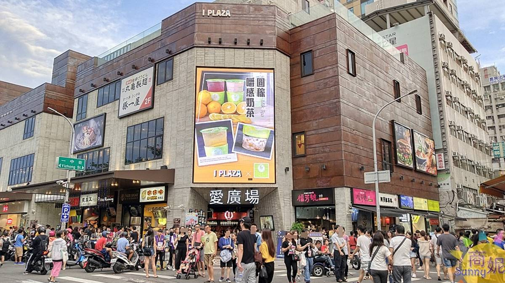

一、商圈簡介
一中街商圈位於台中市北區，緊鄰 台中一中、國立臺灣體育運動大學與國立臺中科技大學。 自 1980 年代補習班與學校聚落發展以來，逐漸匯聚了大量學生人潮， 成為台中最具代表性的青年文化與流行消費商圈之一。
商圈內最具代表性的是多樣化的平價美食與流行服飾。 從傳統經典小吃到創意潮流料理，一中街不僅是學生放學後的好去處， 也是外地遊客來台中體驗在地夜市文化與購物體驗的首選地標。
從歷史悠久的水利大樓到周邊延伸的展會商場，一中街商圈記錄著世代學子的青春歲月。 本篇以特色整理與建議逛街順序，介紹這座充滿活力的熱鬧商圈。
商圈位置：台中市北區一中街（鄰近三民路三段與育才街）。
閱讀重點：平價美食、流行購物與青年文化。
二、商圈特色與逛街順序
值得留意的三個特色
- 平價美食：匯集各式經典雞排、手搖飲料與特色攤販，CP 值極高。
- 流行購物：服飾店、鞋店與文具雜貨密集，緊貼青年流行趨勢。
- 文教氣息：周邊學校與補習大樓林立，洋溢獨特的學生青春氛圍。
建議逛街順序
以下是本報導規劃的散步建議，並非官方指定路線。
- 從三民路入口進入商圈，先瀏覽育才街周邊的經典小吃攤位。
- 前往水利大樓周邊，體驗學生聚落的熱鬧氛圍與經典飲料店。
- 走進一中街主幹道與巷弄，挑選流行服飾與生活雜貨。
- 最後前往周邊的商場或休憩空間，享受美食並整理今日的購物戰利品。
三、重點主題區域比較表
| 區域名稱 | 主要特色 | 建議觀察重點 |
|---|---|---|
| 育才街與一中街口 | 美食攤販聚集核心 | 傳統小吃攤位排列與人潮動線 |
| 水利大樓周邊 | 補習班與學生生活圈 | 學生放學後的飲食與休閒文化 |
| 潮流巷弄區 | 特色服飾與獨立小店 | 櫥窗設計與當季流行服飾趨勢 |
四、商圈意象照片

五、影音報導
透過下方影片認識一中街商圈，再比較影片畫面與本文介紹的特色。
若播放器無法播放，請 在 YouTube 觀看一中街介紹影片（另開分頁）。
影片為外部作者發布之旅遊或美食介紹，現場狀況請以最新官方資訊為準。
六、商圈地理位置與地圖
一中街商圈位於台中市北區，交通便利。下方為 Google 地圖定位：
若地圖無法正常顯示，請至 Google 地圖檢視一中街商圈（另開分頁）。
地址參考：台中市北區一中街與三民路三段交叉口一帶。
七、資料來源
本報導依下列資料整理，逛街順序與觀察建議由作者規劃。
資料整理日期：2026 年 10 月 15 日。